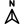

<!DOCTYPE html>
<html>

<head>
	<meta charset=utf-8 />
	<title>Lab 07 — US Power Plants</title>
	<meta name='viewport' content='initial-scale=1,maximum-scale=1,user-scalable=no' />
	<link rel='icon' href='https://newmapsplus.github.io/favicon.ico' type='image/x-icon' />

	<link rel="stylesheet" href="https://cdnjs.cloudflare.com/ajax/libs/normalize/8.0.0/normalize.css" />
	<link rel="stylesheet" href="https://cdnjs.cloudflare.com/ajax/libs/leaflet/1.3.4/leaflet.css">
	<link href="https://fonts.googleapis.com/css?family=Lato:300,300i,400,900i" rel="stylesheet">

	<style>
	
		


		#map {
			width: 100%;
			height: 500px;
			margin: 0px auto;

		}

		.max-image-width {
			width: 100%;
		}

		/* Use float property to make two-column layout */
		.first-column {
			float: left;
			width: 49%;
			padding-right: 2%;
		}

		.column {
			float: left;
			width: 49%;
		}

		/* Clear floats after the columns */
		.row::after {
			content: "";
			display: block;
			clear: both;
		}

		.leaflet-popup-content p {
			margin: 1px 0 -8px;
			font-size: 1.1em;
		}

		.leaflet-popup-content h3 {
			font-family: 'Slabo 27px', serif;
			font-size: 1.3em;
			margin-bottom: 0px;
		}

		/* When browser is 900px wide or less */
		@media screen and (max-width: 900px) {

			.first-column,
			.second-column {
				width: 100%;
			}
		}
	</style>
</head>

<body>
	
	<div id="map"></div>
	
	<script src="https://cdnjs.cloudflare.com/ajax/libs/leaflet/1.3.4/leaflet.js"></script>
	<script src="./data/casos.geojson"></script>
	<script>
		// map options
		var options = {
			center: [39.7, -8],
			zoom: 6
		}

		// create a Leaflet map in our division container with id of 'map'
		var map = L.map('map', options);

		// Leaflet providers base map URL
		var basemap_source =
			'https://cartodb-basemaps-{s}.global.ssl.fastly.net/rastertiles/dark_all/{z}/{x}/{y}.png'

		// Leaflet providers attributes
		var basemap_options = {
			attribution: '&copy; <a href="http://www.openstreetmap.org/copyright">OpenStreetMap</a> &copy; <a href="http://cartodb.com/attributions">CartoDB</a>',
			subdomains: 'abcd',
			maxZoom: 19
		};

		// request some basemap tiles and add to the map
		var tiles = L.tileLayer(basemap_source, basemap_options).addTo(map);

		casos.features.sort(function (a, b) {
			return b.properties.Casos_15_1;
		});


		// var popup = '<h3>' + hotspots[i].name + '</h3>'
		// Load power plants
		Casos_15_1= L.geoJson(casos, {
			filter: function (feature) {
				if (feature.properties.Casos_15_1) { // This test to see if the key exits
					return feature;
				}
			},
			pointToLayer: function (feature, latlng) {
				return L.circleMarker(latlng, {
					color: 'darkred',
					weight: 1,
					fillColor: 'red',
					fillOpacity: 0.3,
					radius: getRadius(feature.properties.Casos_15_1)
				});
			},
			onEachFeature: function (feature, layer) {
				var popup =
					'<p><b>Concelho' + layer.feature.properties.Concelho + '</b></p>' +
					'<p>Nº Casos: ' + layer.feature.properties.Casos_15_1 + ' MW</p>' 

				layer.on('mouseover', function () {
					layer.bindPopup(popup).openPopup();
					layer.setStyle({
						fillColor: 'yellow',
						fillOpacity: 1
					});
				});

				layer.on('mouseout', function () {
					layer.setStyle({
						fillColor: 'red',
						fillOpacity: 0.3
					});
					layer.bindPopup(popup).closePopup();
				})

			}
		}).addTo(map);

		

//Creates Map Scale 

	//Setup Scale Options and add to map in the final
	L.control.scale({
		maxWidth: 250,
		metric : true,
		imperial: false,
		position:"bottomright"
	}).addTo(map)

	//Add north arrow
	var north = L.control({position: "topright"});
north.onAdd = function(map) {
    var div = L.DomUtil.create("div", "info legend");
    div.innerHTML = '';
    return div;
}
north.addTo(map);

		function getRadius(area) {
			var radius = Math.sqrt(area / Math.PI);
			return radius * 3;
		};
	</script>

</body>

</html>
